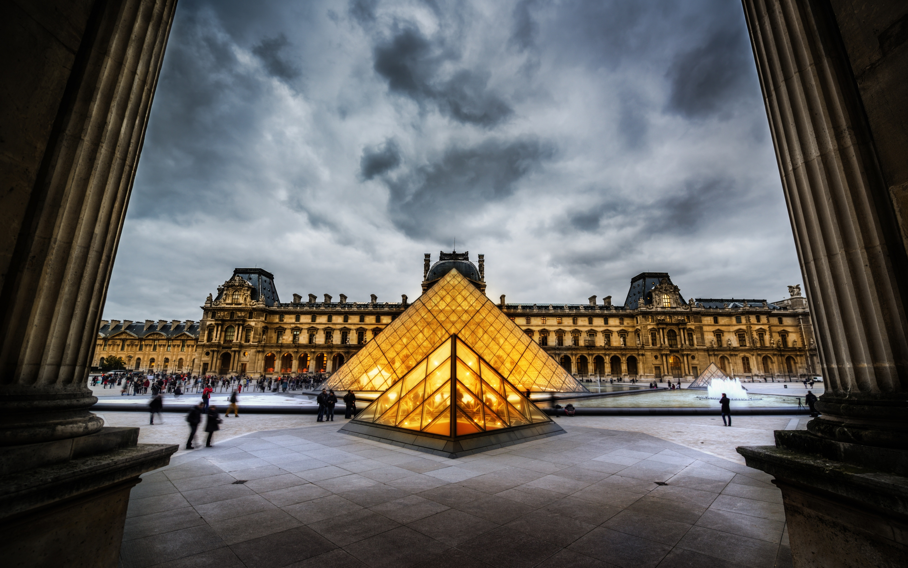

A Louvre története

A múzeum építése
A Louvre eredetileg egy erőd volt, majd XIV. Lajos alatt vált múzeummá, és ma a világ egyik legfontosabb művészeti gyűjteménye.

Mona Lisa
Leonardo da Vinci híres festménye, a Mona Lisa a Louvre legnagyobb vonzereje.